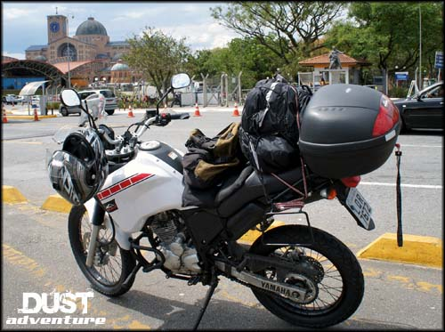
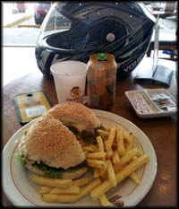
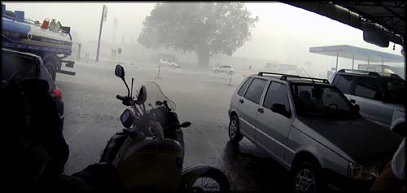

Rio de Janeiro, 14 de outubro de 2013. Já era por volta de 10:00h quando consegui aprontar tudo na moto para partir em viagem, com rumos e roteiros um tanto incertos. A quilometragem total da Ténéré 250 marcava 10763 Km. Era uma segunda-feira com tempo bom. Saí da Zona Oeste do Rio para pegar a Via Dutra por Campo Grande e Seropédica.
O começo foi horrível. Era a primeira vez que utilizava os alforjes laterais, estranhei muito. Estava calor infernal, e o trânsito em Campo Grande e Seropédica no mesmo nível. Principalmente Seropédica com seus inúmeros radares de velocidade, incontáveis quebra-molas, pouco asfalto no meio de tantos buracos, e carros e caminhões velhos enrolando tudo. Finalmente depois de 1 hora e pouco de sufoco, saí deste caos, após pagar o extorsivo pedágio de R$ 5,00 na entrada para a Dutra.
Parei no primeiro posto de gasolina, completei o tanque (73 Km rodados), e amarrei as duas bolsas dos alforjes sobre o banco do carona, tirando aquele volume extra nas laterais da moto. Achei que ficaria melhor, mas foi só nesse dia que fiz assim, nos outros voltei os alforjes para as laterais. Só atrapalha mesmo quando entra em cidades com trânsito pesado.
Segui num ritmo bom, passei por Aparecida (chamada popularmente de "Aparecida do Norte"), e como eu nunca tinha ido lá, sempre passando e olhando da estrada, resolvi entrar e fazer umas fotos. Mas acabei nem entrando nas instalações da basílica, tinha que pagar estacionamento, entrada, e eu só queria ver como era e continuar viagem, porque esse primeiro dia queria ir mais longe possível. Meu plano era chegar logo em Capão Bonito/SP.
[caption id="attachment_200" align="aligncenter" width="500"] Parada rápida em Aparecida. Alforjes laterais amarrados no banco do carona.[/caption]
Depois segui viagem até Taubaté/SP, completei o tanque de novo (305 Km rodados) e almocei um X-Burger com fritas e refrigerante na lanchonete Frango Assado (R$ 17,00). Depois voltei à estrada, mais dois assaltos em pedágios de R$ 5,00 cada um, ainda na Dutra, e vamos em frente.
[caption id="attachment_201" align="aligncenter" width="200"] Almoço nada saudável no Frango Assado de Taubaté[/caption]
Logo depois que voltei à estrada, o tempo começou a ficar bem estranho. À minha frente, nuvens negras e trombas de chuva visíveis ao longe. Assim que começou a chover já fiquei esperando um bom ponto para parar a moto e colocar a capa de chuva. No primeiro posto de gasolina que vi, parei.
Que sorte, a chuva ficou uma coisa de louco. Ventos fortíssimos, muita água, em menos de 2 minutos toda a área do posto alagou. Até mesmo os carros de passeio que vinham na estrada entravam no posto para esperar, visibilidade zero, telhas voando, um caos.
[caption id="attachment_202" align="aligncenter" width="500"] Temporal tenso na altura de Taubaté, sorte que tive tempo de parar antes...[/caption]
Lá fiquei por uns 30 minutos, até que a chuva ficou mais fraca e eu resolvi seguir. Não queria passar pela cidade de São Paulo, então desviei para a Rodovia Dom Pedro I para subir até Campinas/SP. A chuva já não me acompanhava, e, ao contrário da Dutra, esta rodovia tem o asfalto muito bom, com belas paisagens ao longo. Quis até parar e tirar fotos em alguns trechos, mas meu horário já estava muito apertado. Sem fotos. Ali é pertinho, volta e meia passarei novamente por aquelas bandas.
Na Dutra o pedágio ainda me tomou mais R$ 2,25, e na D. Pedro foram mais dois pedágios, um de R$ 2,70 e outro de R$ 3,30.
Cheguei em Campinas, coloquei no GPS o trajeto que queria para seguir viagem. Fiquei um tempo preso no trânsito da cidade. Motoristas de carro dirigindo mal, radares de velocidade a cada metro, sinais de trânsito, aquela coisa de hora do rush né. Finalmente consegui sair de Campinas e partir rumo a Sorocaba, por onde pretendia só passar e comprar um capacete novo em uma loja que eu tinha visto na Internet.
Não deu certo, cheguei em Sorocaba já de noite, e vi que seria furada tentar chegar em Capão Bonito, apesar de não estar tão longe. Era a primeira noite que eu iria ter que procurar hotel em lugares desconhecidos, fiquei receoso, e decidi ligar pros meus primos que moram em Sorocaba mesmo. Tinha falado para eles que passaria lá na volta da viagem para bebermos umas cervejas, mas precisei aparecer de surpresa logo na ida. Sorte que estavam em casa.
Me encontrei com meu primo, fui para casa dos meus tios, bebi umas Heinekens com eles, e fui dormir para tentar sair cedo no dia seguinte. O plano era chegar em Capão Bonito e descer até Apiaí, fazendo o percurso de estrada apelidado de Rastro da Serpente, e depois seguir até Curitiba/PR, onde procuraria um lugar para dormir.
---------- Comentários são bem vindos, inclusive dúvidas que eu saiba responder. Por questão de organização, comentários sobre a viagem ao Uruguai estarão concentrados no primeiro artigo que pode ser acessado aqui: Viagem de Moto do Rio ao Uruguai – Apresentação. Obrigado pela vista!